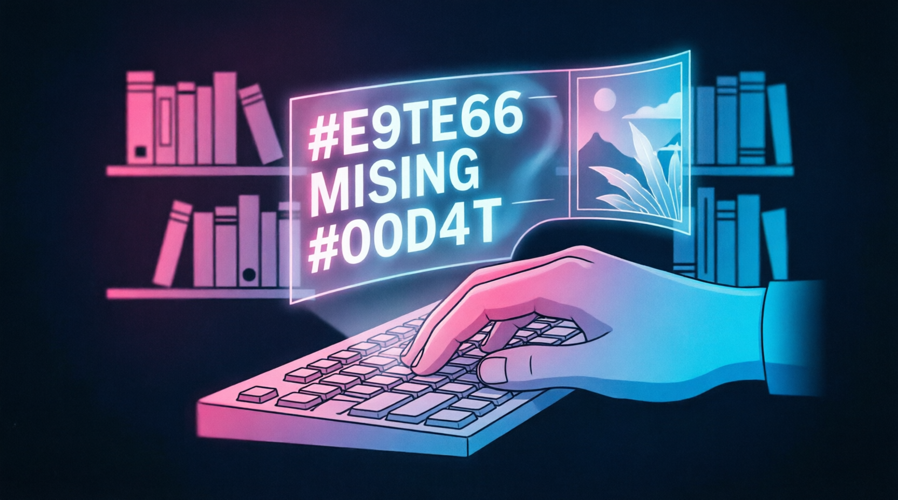
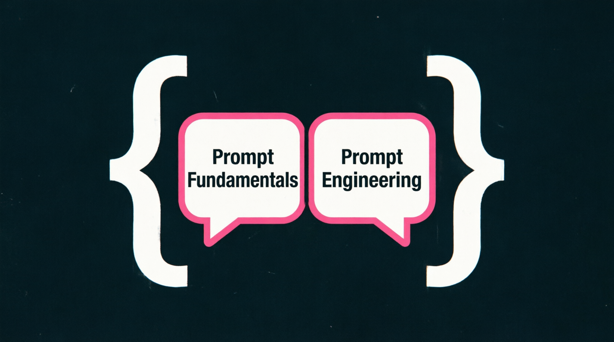
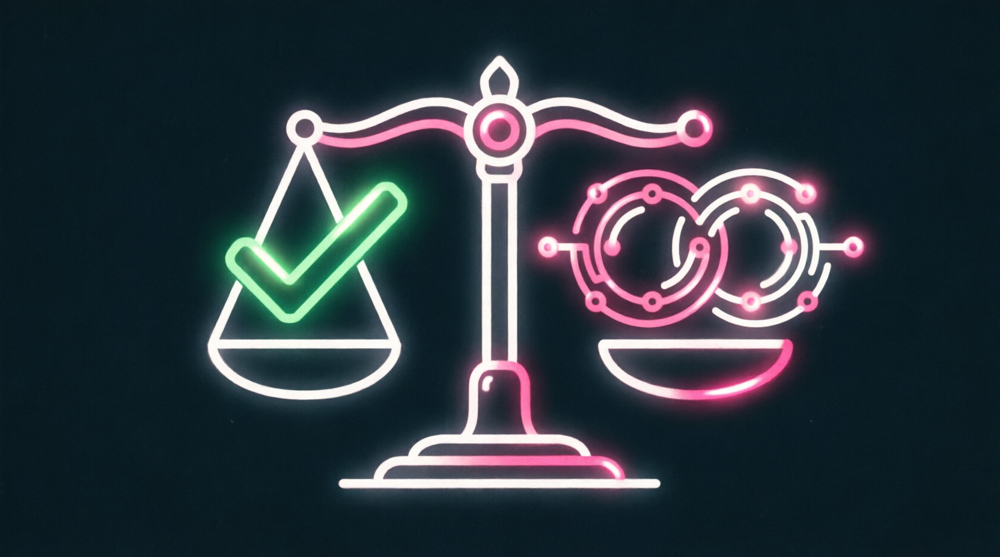
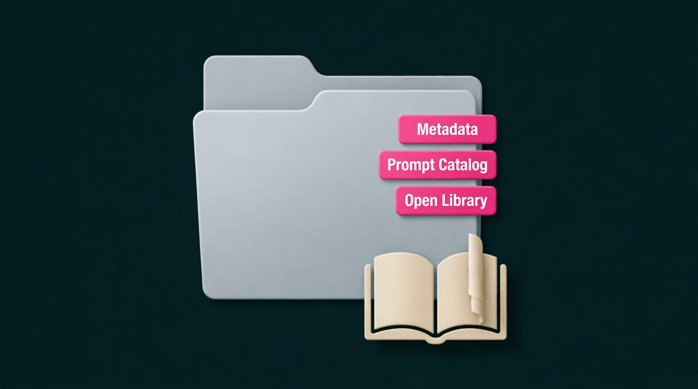
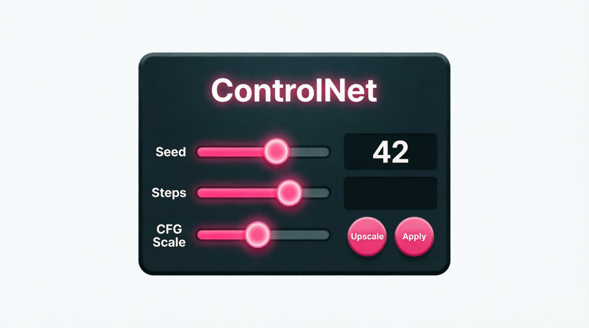
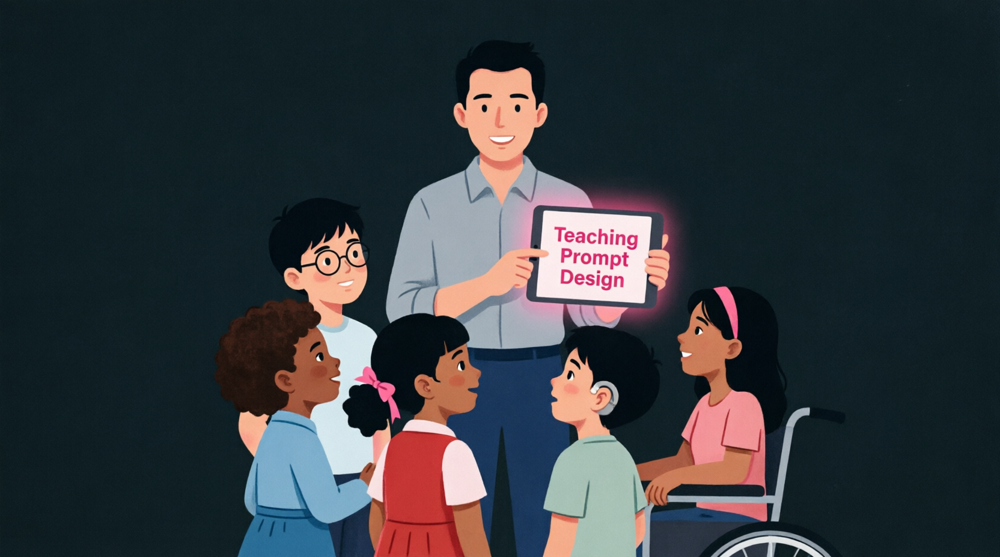
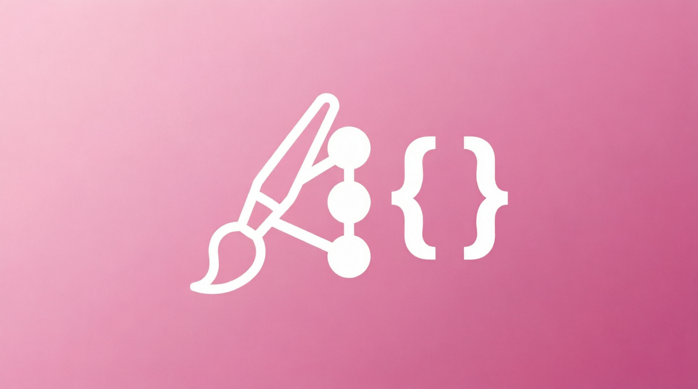

anti-ai-qwen-academy • Prompt Designer / Neuroillustrator
Library Hub • 100% Offline • 10 days • Ethical AI Art


✍️
🎨
⚖️
🛠️
🎓
📁🏆 CERTIFICATE REQUIREMENTS
Prompt Design + Qwen formats
No mistakes
5 cases in Qwen formats
⚠️ Perfect results → Library Contributor access
📊 Progress
⚠️ All data will be deleted
🛠️ Prompt Designer Toolkit
Interactive tools for ethical prompt design practice
✍️ Prompt Builder
Craft effective, ethical prompts for image generation
🎨 Style Reference Library
Culturally relevant styles for library projects
Click a style to auto-add to your prompt
⚖️ Ethics Checklist
Verify your generated image before use
📝 Prompt Documentation
Generate a record for the open prompt library
📚 Prompt Designer Specialist Library
Role documentation, ethics, workflows, resources
🎭 Prompt Designer / Neuroillustrator
Bridge between AI technology and human meaning in visual culture
🔑 Key Mission
Create quality, ethical, accessible AI illustrations for library projects while teaching readers conscious prompt design and preserving human authorship.
🧩 Responsibilities
- Generate illustrations for library events, social campaigns, educational materials
- Design, test and document prompts with parameters, seeds, negative prompts
- Conduct workshops for readers (schoolchildren, students, adults, 55+)
- Filter content: check for correctness, plagiarism, cultural distortions
🛠️ Tools
Midjourney, SDXL, Kandinsky; Figma/GIMP for post-processing; Notion/Obsidian for prompt catalog; Upscayl for upscaling.
📊 KPIs
- 12+ approved illustrations used in library materials
- 20+ tested prompts in open catalog
- 1-2 public workshops conducted
- 0 ethical violations in published content
🎯 Why libraries need Prompt Designers
Libraries are becoming digital cultural hubs. Prompt Designers ensure visual content is ethical, accessible, culturally relevant, and educational — not just generated.
🎨 Visual Production
Creating illustrations for posters, booklets, social media, exhibitions
qwen_prompt_record.md📚 Educational Content
Developing visual materials for workshops, guides, digital exhibitions
qwen_educational_asset.json⚖️ Ethics Review
Checking AI art for bias, stereotypes, copyright compliance
qwen_ethics_audit.csv🎓 Reader Education
Teaching conscious prompt design and critical AI literacy
qwen_workshop_guide.pdf🗂️ Open Resources
Building public prompt libraries with documentation and examples
qwen_prompt_catalog.json🛠️ Graduate Skills
🔹 Hard Skills
- Prompt engineering for 2-3 image generation models
- Style adaptation for cultural relevance and accessibility
- Ethics review: copyright, bias, stereotypes detection
- Post-processing: upscaling, compositing, design integration
- Documentation: prompt cataloging with metadata
🔹 Soft Skills
- Cultural sensitivity and inclusive design thinking
- Teaching complex concepts in simple language
- Collaboration with librarians, curators, volunteers
- Open-source mindset: sharing knowledge and prompts
- Ethical judgment in visual communication
💼 Where do Prompt Designers work?
Formats: Volunteer • Internship • Grant-funded • Part-time
📈 Path to Prompt Designer Specialist
- Days 1-3: Role intro, AI models overview, prompt fundamentals
- Days 4-6: Style adaptation, ethics review, technical parameters
- Days 7-8: Post-processing, educational work, documentation
- Day 9: Portfolio in Qwen-compatible formats
- Day 10: FINAL EXAM (10/10)
📦 Qwen Prompt Designer Reporting Formats
🤝 SUPPORT THE PROJECT 💙
App is free. Always will be.
Support development: